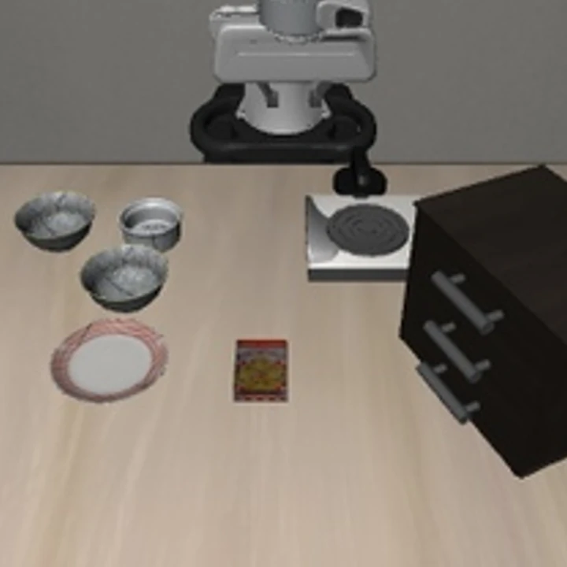
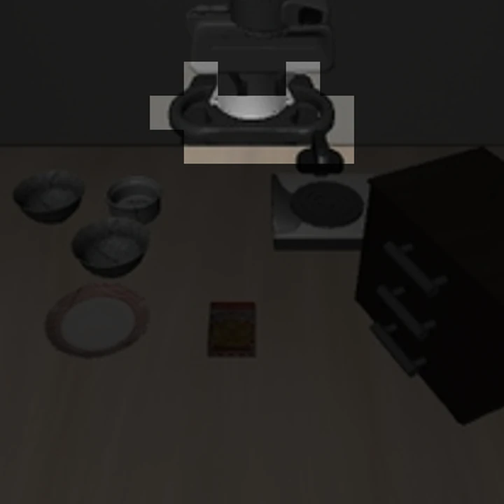
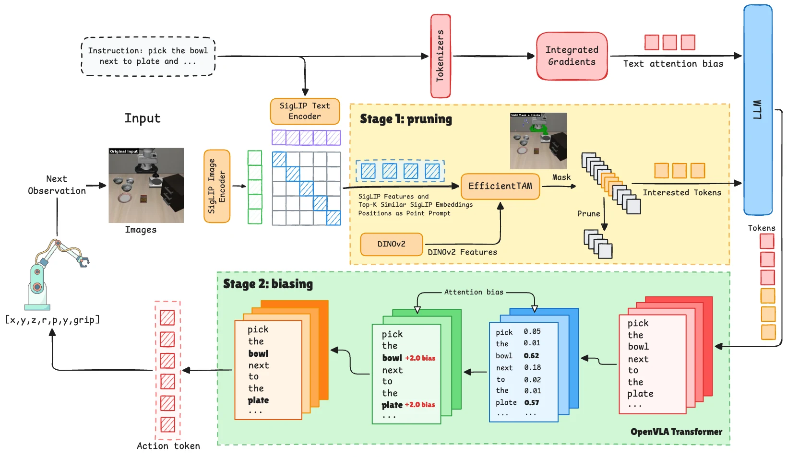
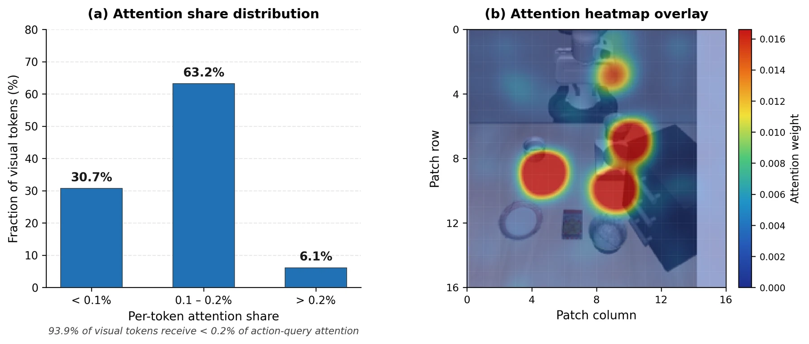
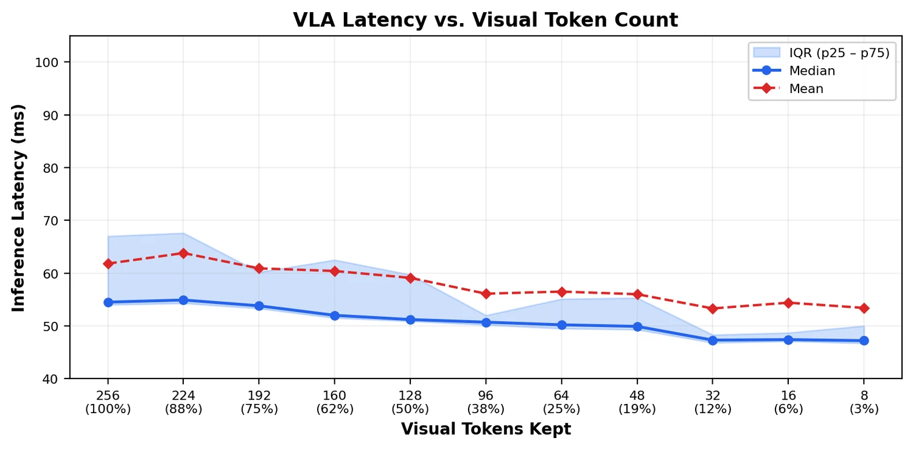
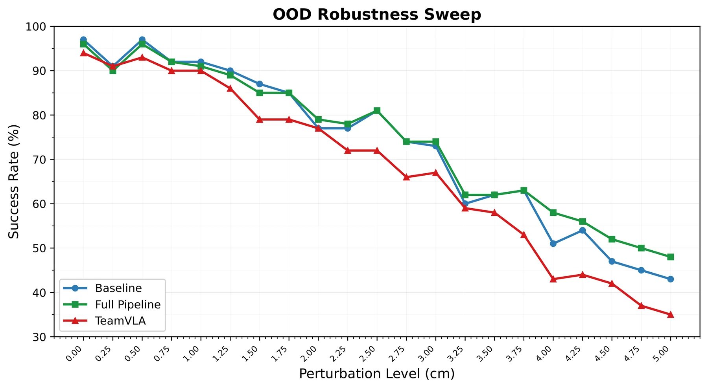
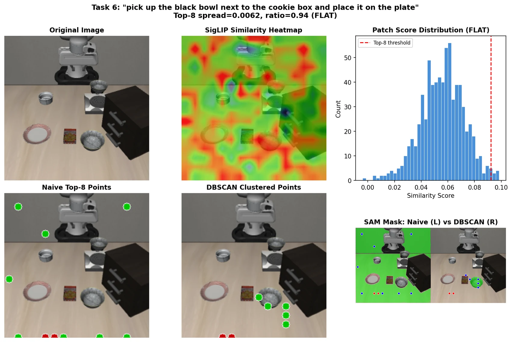

ASP-DAC 2027
See less.
Act better.
T3R removes irrelevant visual tokens before decoding, then redirects attention toward instruction-critical evidence—without retraining.
UT Austin · Georgia Tech · UIUC · Sun Yat-Sen University · UNC Chapel Hill · HKUST
Task-relevant tokens
Full observation


The idea
Two kinds of redundancy.
Two stages of refinement.
Many visual patches are irrelevant to the instruction, while attention over the remaining sequence is often diffuse. T3R addresses both problems at inference time.
01
Before the decoder
Prune the visual sequence.
POS-weighted SigLIP similarity identifies likely task targets. EfficientTAM turns those prompts into a mask, and only the selected patches enter the language model.
02
Inside the decoder
Refocus action attention.
Integrated Gradients finds instruction-salient tokens. A lightweight additive bias guides action-token queries in the middle decoder layers.

Visual walkthroughs
The method, frame by frame.
Short animated explainers assembled from the paper figures. They illustrate the processing pipeline and measured trends rather than depicting real-time robot rollouts.
From observation to retained tokens
Similarity → segmentation → pre-decoder pruning.
Why refinement helps
Attention concentration, latency, and OOD robustness.
Main results
A smaller sequence.
Nearly the same success.
On LIBERO-Spatial, T3R removes 85% of scene-camera tokens before decoding while retaining 96% success—one point below the unpruned model and far above competing methods at the same reduction.
| Method | Reduction | Success | Runtime |
|---|---|---|---|
| Baseline | 0% | 97% | 107.5 ms |
| TeamVLA | ~15% | 94% | 102.6 ms |
| FastV | 85% | 14% | — |
| ADP | 85% | 66% | — |
| T3R | 85% | 96% | 92.5 ms |
Runtime is measured per control step on one NVIDIA L40S at 224 px.
At matched 85% reduction
+30 ppover ADP and +82 pp over FastV.


Robustness
Removing distractors helps under shift.
T3R tracks the unpruned model under small perturbations, then pulls ahead beyond roughly 2 cm—reaching a seven-point advantage at 4 cm.

Generalization
Pruning gains scale with sensor redundancy.
T3R is strongest when multiple views provide overlapping evidence. Single-camera tasks offer less redundancy and less room for aggressive pruning.
1 camera · CogACT
SIMPLER
At 60% keep, T3R matches the 10.4% Bridge baseline but trails Google Robot by 5.5 points.
2 cameras · OpenVLA-OFT
LIBERO
T3R retains 96% success at 85% scene-camera reduction and improves robustness under object-placement shift.
3 cameras · π0.5
RoboTwin
The norm-saliency adaptation reaches 38.3% at 62.5% keep, exceeding the 33.4% unpruned baseline.
CogACT · SIMPLER
Single-camera transfer
Average success rate (%)
| Method | Keep ratio | Google Robot | WidowX/Bridge |
|---|---|---|---|
| Baseline | 100% | 73.2 | 10.4 |
| ADP | 75% / ~87% | 71.0 | 16.7 |
| FastV | ~60% | 73.3 | 15.6 |
| TeamVLA | 31.25% | 69.5 | 12.5 |
| T3R | 60% | 67.7 | 10.4 |
With one view, aggressive pruning has less redundant visual evidence to remove.
π0.5 · RoboTwin
Three-camera token budget sweep
Unpruned baseline: 33.4%
| Tokens/camera | Keep | T3R | ADP | FastV | TeamVLA |
|---|---|---|---|---|---|
| 64 | 25% | 13.3 | 13.3 | 11.7 | 3.3 |
| 96 | 37.5% | 25.0 | 13.3 | 23.3 | 11.7 |
| 128 | 50% | 33.3 | 19.4 | 18.1 | 13.9 |
| 160 | 62.5% | 38.3 | 25.0 | 28.3 | 15.0 |
| 192 | 75% | 62.5 | 33.4 | 37.5 | 20.9 |
The π0.5 transfer uses norm-saliency selection with original position preservation; the OpenVLA-OFT IG-bias stage is not used for these reported results.
Selection quality
Similarity alone is noisy. Spatial agreement makes it useful.
T3R clusters high-scoring points before segmentation, suppressing isolated background matches and producing a tighter object mask.

Abstract
Training-free refinement for efficient VLA inference.
Vision-Language-Action models process hundreds of visual tokens at every decision step, increasing latency while allowing irrelevant context to distract action prediction. T3R addresses two complementary forms of redundancy: spatially irrelevant visual tokens and misallocated attention over the remaining sequence.
Stage 1 removes irrelevant patches before decoder entry using segmentation-guided pruning. Stage 2 applies saliency-guided attention biasing to emphasize action-critical evidence. Across OpenVLA-OFT, CogACT, and π0.5, the results show that token refinement can improve the efficiency and robustness of VLA inference without retraining.
Scope
Experiments are simulation-based. Benefits are strongest in multi-camera settings; aggressive irreversible pruning can be less effective for single-camera or multi-phase tasks, and segmentation errors can remove necessary evidence.
Citation
Use T3R in your research.
The arXiv button will activate after the camera-ready manuscript is approved and uploaded.
@inproceedings{hassan2027t3r,
title = {T3R: Training-Free Two-Stage Token
Refinement Towards Efficient and Robust
VLA Models},
author = {Hassan, Mohammed and Chen, Zhenyang and
Wang, Zheng and Zhu, Zhixin and Chen,
Tianlong and Lin, Yingyan and Li, Chaojian},
booktitle = {ASP-DAC},
year = {2027}
}